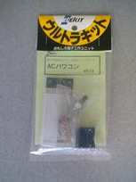
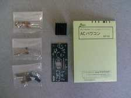
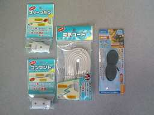

|
秋月からも同じようなキットが発売されているようですが、運悪く売り切れだったため、エレホビー
NT-14となりました。
 
導線・コネクタ類は付属してないので別途購入することになります。
説明書には必ずケースに入れて使うよう指示があるので、同じく用意する必要があります。
ケースは手持ちタッパーと使うことにし、ACコードを求めて100円ショップに行ったのですが、これまた不運にも延長コードが売り切れだったので、それぞれ別部品で揃え３１５円してしまいました。

このキットは100Vを扱うので、水やほこりには特に注意が必要です。またケース選びの際にも、放熱に気を配った方が無難でしょう。ケーブルは、キット定格の300Wに耐えられるものを用意する必要があります。とはいっても、一般的な電気用コードは12A（1200W）程度が定格ですので、事実上どれを選んでも構わないということになります。
|